peb
2026 品牌成長策略提案
peb 有好產品、
有護理師的專業背書——
但現在，需要一條路，
走向更多消費者。
這份提案從你想做的事出發，
幫 peb 找到做對、做好的方法。
SCROLL
01
現況盤點 · Current State
品牌現在的位置
85%
集中在醫護圈
銷售高度倚賴既有的專業圈人脈
15%
散布在消費市場
官網、百貨、異業合作佔比很小
來自銷售數據與現有客戶訪談。官網與消費端的佈局，都還有很大的成長空間。
02
起點 · Starting Point
你想做的事——以及做好它的前提
自媒體導購和護理小書，方向是對的。
但在動手之前，我多看了一圈——發現要讓它們真正有效，有幾個環節需要先到位。
你想做的
自媒體導購
IG · FB · Threads · 內容經營
護理小書
知識素材 · 信任建立工具
要做好，這些得先到位
品牌語言統一
目前官網說的是護理師的語言，不是消費者的語言
品牌記憶點
消費者進站後，不知道 peb 跟其他精油品牌有什麼不同
官網轉換基礎
引流做再多，成交頁面沒準備好，轉換率不會動
這不是要一次做完所有事——而是確保自媒體和護理小書做了之後，每一分力氣都不會浪費。
03
市場對照 · Market Review
先看看，市場上的鄰居們
跟兩個定位相近的品牌放在一起看——不是要模仿，是看清自己的位置。
| 關鍵維度 | peb 沛泊 | 芙彤園 | 唯有機 |
|---|---|---|---|
| 品牌溝通語言 | 偏醫護圈語言，消費者看不懂 | 「你的輕芳療師」——親切、生活化 | 歐盟認證選品——信任感強 |
| 明星產品 | 品項多，但沒有一個代表作 | 薰衣草系列為明確主打 | 「玫瑰時光瓶」反覆出現在各頁面 |
| 新客引導 | 沒有「第一次怎麼買」的動線 | 新手指南、推薦套組明顯 | 測驗 → 推薦的流程設計完整 |
| 信任建立 | 護理師背書真實，但沒被放大 | 名人推薦 · 媒體報導 · ESG形象 | ECOCERT認證 · 綠色美妝大賞19座獎項 |
| 購買門檻 | 免運 $3,600 偏高，促購 CTA 不足 | 免運活動彈性，結帳前有贈品引導 | 超取、分期降低壓力，結帳流程簡化 |
問題 01
語言落差大
官網用護理師的語言說話，消費者聽不懂
轉換率低
問題 02
沒有記憶點
進站後不知道 peb 跟其他精油品牌差在哪
難以建立品牌
問題 03
新客引導不足
沒有「第一次怎麼選」的幫助，容易放棄
轉換率低
peb 的位置是獨特的——「護理專業 × 法國有機」，競品都沒有。
問題不在產品，在於怎麼讓消費者聽懂、記住、願意買。
問題不在產品，在於怎麼讓消費者聽懂、記住、願意買。
04
消費者路徑 · Consumer Journey
所有路，最終都回到官網
05
品牌定位 · Brand Positioning
品牌核心——初步梳理方向
以下是根據現況與競品分析，初步整理的品牌定位方向。
這是討論的起點，不是定案——見面時一起確認。
品牌如何連結消費者 · Brand to Consumer
入口
主力帶貨產品
消費者記得住的入口
降低嘗試門檻
降低嘗試門檻
→
第一印象
建立初步信任
素材・社群・百貨
接觸產生連結
接觸產生連結
→
深化關係
進入品牌世界
官網・LINE@・護諮
了解更多產品
了解更多產品
→
目標
成為長期顧客
回購・會員
口碑擴散
口碑擴散
品牌定位的每一個維度，都在服務同一件事——
讓消費者從「第一次認識」走到「長期信任」。
讓消費者從「第一次認識」走到「長期信任」。
06
執行路徑 · Roadmap
2026 建議分兩個階段
先把基礎蓋穩，下半年每一步才能真的有效。
不是做很多事——是做對的事，按順序做。
4月 — 6月
基礎升級工程
把語言換成消費者聽得懂的
品牌基礎 +
- 釐清品牌定位與核心優勢
- 重寫商品語言：醫護術語 → 消費者情境
數位陣地 +
- 官網架構調整，加入「對症選品」入口
- LINE@ 訊息架構梳理
素材統一 +
- 統一對外視覺與溝通語言
- 醫護通路素材持續優化維持
→ 目標：所有入口說同一種話
7月 — 12月
放大引擎
用已建好的基礎，逐步擴大觸及
流量擴大 +
- 社群固定發文節奏建立
- 知識型 KOL 合作，打造真實感
- 消費者討論社群啟動
通路拓展 +
- 百貨設櫃評估與執行
會員深耕 +
- LINE@ 定期訊息 OA 推送
- 電子報 / 會員報，增加黏著度
→ 目標：官網轉換率提升，會員人數成長
2027 · 延伸方向（虛線規劃）
CRM 會員系統深化
公益活動 · 品牌公民形象
活動舉辦 · 消費者社群
💡 2026 把品牌定位說清楚，2027 才能開始做更深的會員經營與活動。地基不穩，放大只會放大問題。
08
護理小書 · Care Booklet
護理小書——不只是素材，是信任入口
護理小書是 peb 最有差異化的內容資產。
它不只是一本手冊——是讓消費者第一次感受到「這個品牌懂我」的關鍵觸點。
定位與場景
核心定位
以護理知識建立信任，引導消費者從「認識」走到「選購」
使用場景一
百貨快閃現場 — 實體發放，現場翻閱建立專業印象
使用場景二
LINE@ 數位版 — 加入好友即可領取，導流入會員
使用場景三
官網下載 — 留下 email 換取下載，累積名單
使用場景四
醫護通路 — 搭配產品附贈，強化專業背書
內容方向建議
對症護理指南
依身體系統分類，消費者看得懂的護理知識
精油入門科普
什麼是精油、怎麼選、怎麼用——新手友善
產品使用情境
不同生活場景 × 適合的產品推薦
安心成分解讀
有機認證、驢奶冷皂、天然成分的白話說明
NEW CONCEPT
延伸提案 · Interactive Extension
LINE@ 互動對症問卷——你的隨身護理師
把護理師親自問診、推薦產品的過程數位化。
消費者透過幾個簡單問題，就能找到最適合自己的產品——不用懂精油，也不用猜。
消費者透過幾個簡單問題，就能找到最適合自己的產品——不用懂精油，也不用猜。
STEP 1
回答 3–5 個問題
你的困擾是什麼？皮膚狀況？生活習慣？
你的困擾是什麼？皮膚狀況？生活習慣？
STEP 2
系統對症分析
根據身體系統分類，找出護理方向
根據身體系統分類，找出護理方向
STEP 3
推薦適合產品
附帶護理知識說明，建立信任後導購
附帶護理知識說明，建立信任後導購
應用場景：LINE@ 圖文選單入口 · 官網互動頁面 · 百貨快閃現場 QR code 掃碼體驗
💡 這是 peb「護理專業」最直接的數位化體現——讓每位消費者都能感受到「有人在幫我想」。
護理小書的素材可以拆解再利用——每一個章節都能變成社群貼文、LINE@ 推播、官網內容頁。
搭配互動問卷，一份素材，多重觸點，從認識到成交一條龍。
搭配互動問卷，一份素材，多重觸點，從認識到成交一條龍。
09
品牌視覺 · Visual Direction
品牌視覺風格方向
一個成功的品牌
視覺設計是消費者對於品牌的記憶點之一
譬如
我們看到 綠＋黑 會聯想到Uber
看到紫色會想到YAHOO Anna Sui
看到桃紅 會想到MOMO購物或是foodpanda ……等
品牌主色也代表著其主要產品信念
大地色 綠色系 會讓人輕易聯想到 自然 舒緩 健康 相關
黃 橘 紅色......等彩度高的色系 容易運用在美食相關 易引起食慾
目前peb品牌視覺氛圍較為理性 可以理解這樣的色系，是要以醫護專業角度提供專業信任感，
建議整體上若能增加一點"引誘感"，激發消費者勢必可以讓整體更有記憶點。
基於品牌的露出 大部分為照片/影像 搭配 文字
針對整體品牌風格
提供以下三種方向 以供參考
視覺設計是消費者對於品牌的記憶點之一
譬如
我們看到 綠＋黑 會聯想到Uber
看到紫色會想到YAHOO Anna Sui
看到桃紅 會想到MOMO購物或是foodpanda ……等
品牌主色也代表著其主要產品信念
大地色 綠色系 會讓人輕易聯想到 自然 舒緩 健康 相關
黃 橘 紅色......等彩度高的色系 容易運用在美食相關 易引起食慾
目前peb品牌視覺氛圍較為理性 可以理解這樣的色系，是要以醫護專業角度提供專業信任感，
建議整體上若能增加一點"引誘感"，激發消費者勢必可以讓整體更有記憶點。
基於品牌的露出 大部分為照片/影像 搭配 文字
針對整體品牌風格
提供以下三種方向 以供參考
★ A 風格
隨性插畫線條風
版面（A-1~A-4）
以現有的照片＆文字說明
建議可搭配簡約線條插畫風格
大量留白＋隨性花草線條＋柔性色塊（粉 粉橘 粉綠 粉藍）
是皆可 傳達柔軟 舒壓 輕盈感的色系
適合用來當作品牌的代表色系
以現有的照片＆文字說明
建議可搭配簡約線條插畫風格
大量留白＋隨性花草線條＋柔性色塊（粉 粉橘 粉綠 粉藍）
是皆可 傳達柔軟 舒壓 輕盈感的色系
適合用來當作品牌的代表色系
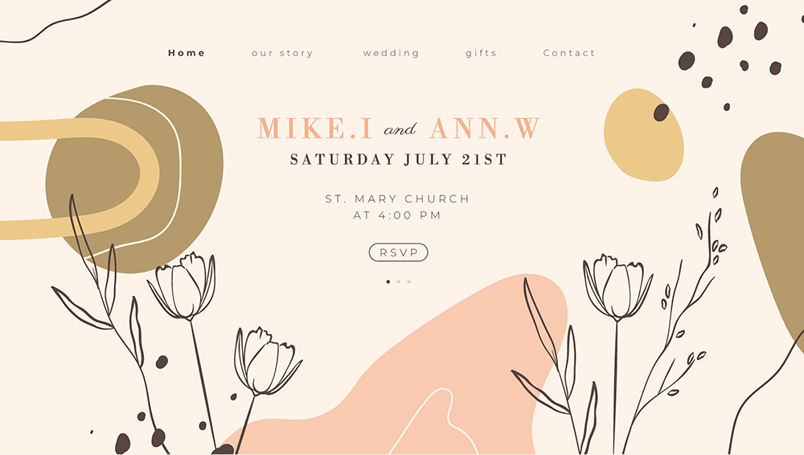
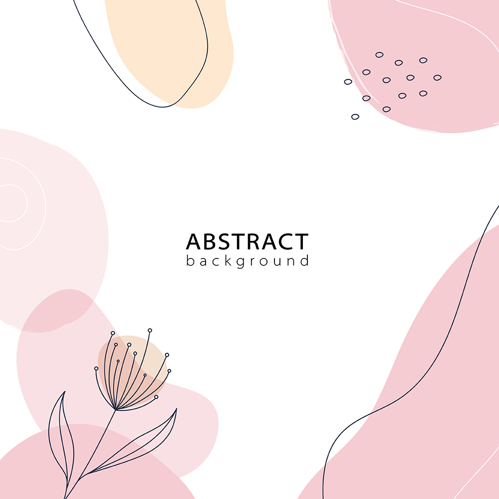
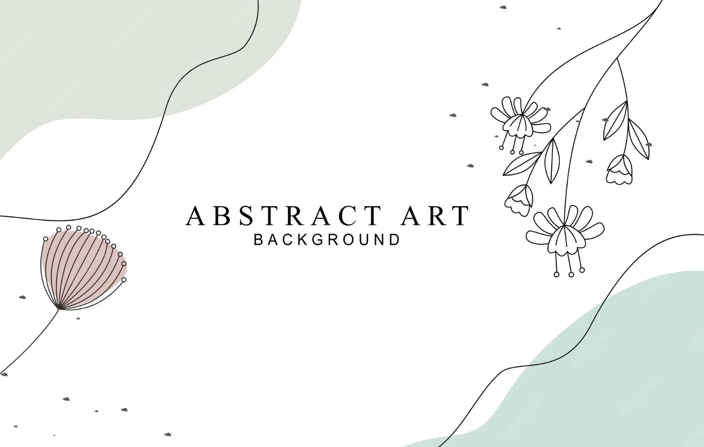
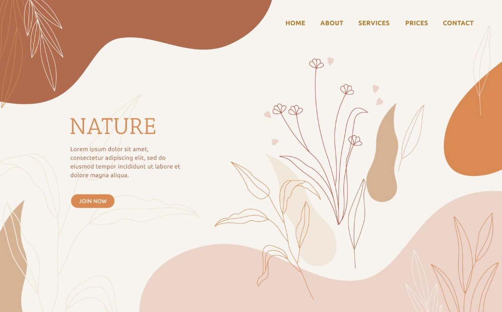
人物（A-5）
建議可搭配相同chill的人物插畫
筆觸隨性 與選定的版面風格可互搭
藉由人物的裝扮設定
更可讓消費者有更多的共鳴
建議可搭配相同chill的人物插畫
筆觸隨性 與選定的版面風格可互搭
藉由人物的裝扮設定
更可讓消費者有更多的共鳴
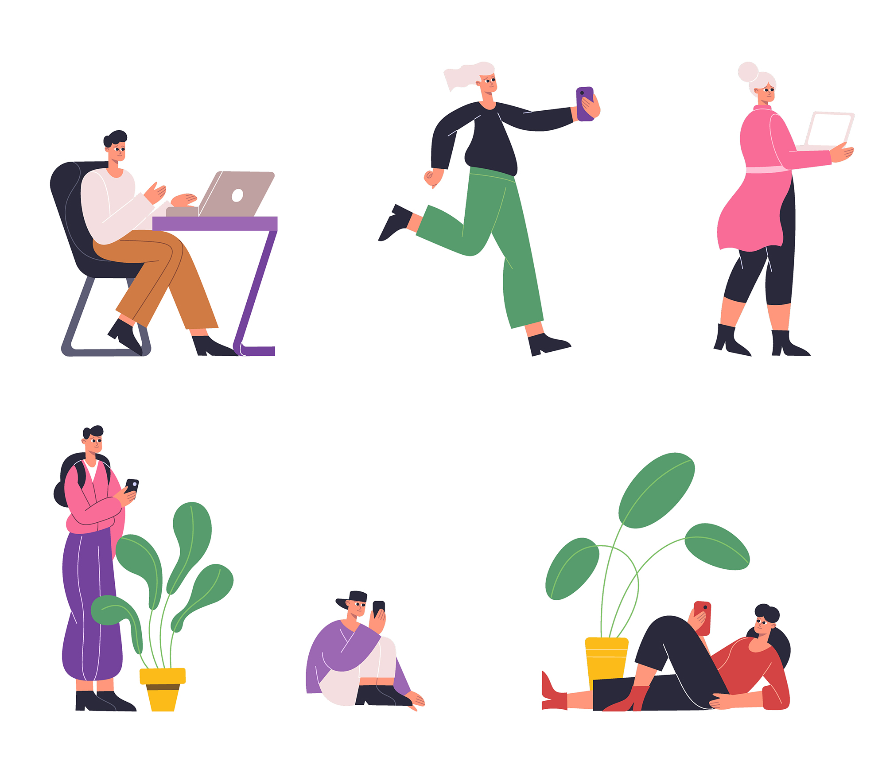
★ B 風格
極簡幾何風
版面（B-1~B-3）
圖中運用圓形、半圓與直線，象徵精萃技術的精準與有機植物的純粹。
這種不依賴複雜具象圖案的設計，呼應了有機精神 「不添加化學雜質」、「保留植物靈魂」的簡約哲學。
色調亦以柔和色系為主，整體能引發消費者對於「身心靈平衡」的期待。
圖中運用圓形、半圓與直線，象徵精萃技術的精準與有機植物的純粹。
這種不依賴複雜具象圖案的設計，呼應了有機精神 「不添加化學雜質」、「保留植物靈魂」的簡約哲學。
色調亦以柔和色系為主，整體能引發消費者對於「身心靈平衡」的期待。
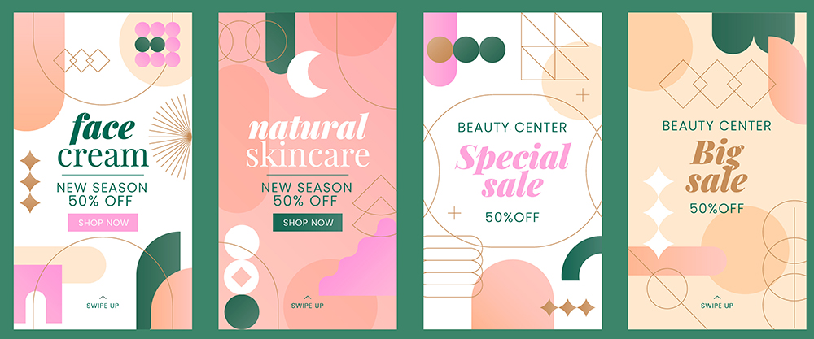
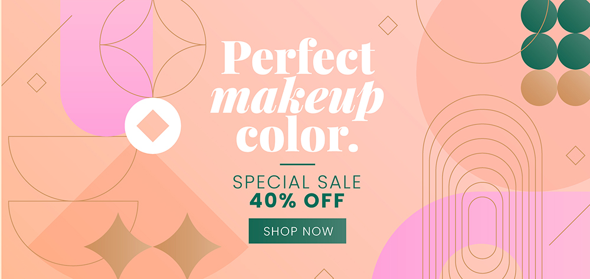
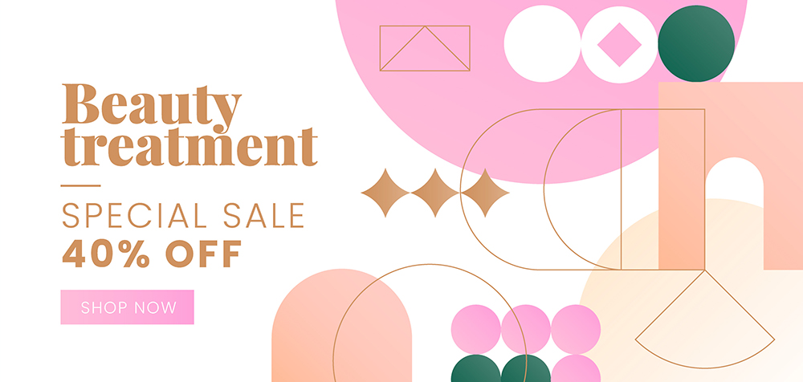
人物（B-4）
人物肢體由簡化的圓形和直線構成，此高飽和度色塊的設計語彙，使其能與
上述幾何抽象的版面產生完美的視覺連續性與風格統一性，
營造出活潑且具有設計感的整體氛圍，進而更能吸引消費者目光。
人物肢體由簡化的圓形和直線構成，此高飽和度色塊的設計語彙，使其能與
上述幾何抽象的版面產生完美的視覺連續性與風格統一性，
營造出活潑且具有設計感的整體氛圍，進而更能吸引消費者目光。
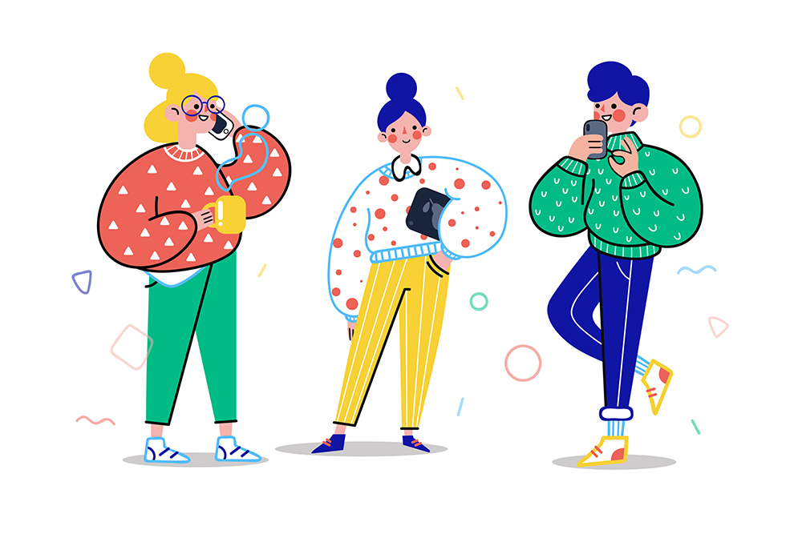
★ C 風格
雅緻童趣風
版面（C-1~C-2）
因ＴＡ有大部分為媽媽身份
對於童趣風格應該會較有感
建議可以類似的雅緻手繪風格
繪製品牌代表動物"驢子"(C-3-peb吉祥物)
以溫和的小動物
代替大部分人物出現的狀態
線條必須優雅簡約
以利營造品牌高質感的形象
因ＴＡ有大部分為媽媽身份
對於童趣風格應該會較有感
建議可以類似的雅緻手繪風格
繪製品牌代表動物"驢子"(C-3-peb吉祥物)
以溫和的小動物
代替大部分人物出現的狀態
線條必須優雅簡約
以利營造品牌高質感的形象
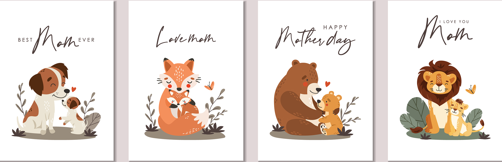
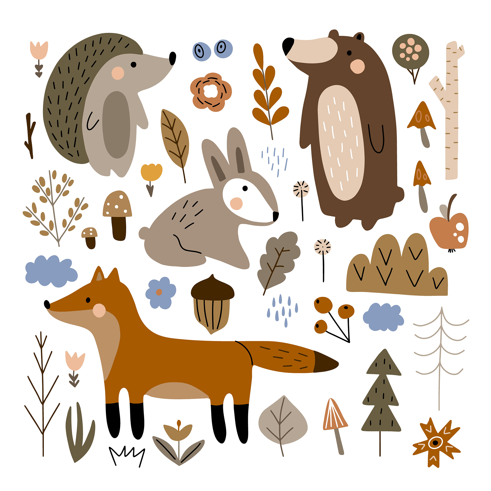
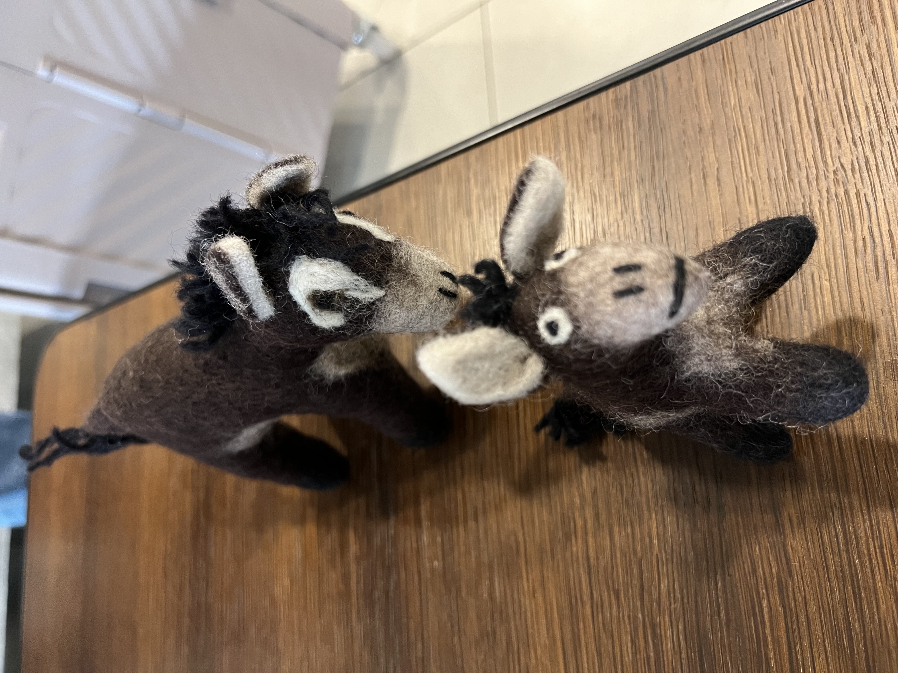
peb 版面設計規範
因品牌有許多與醫院端的講座合作
也會在雙方的社群平台露出
建議務必要跟對方拿到原始檔
由品牌端進行適合的元素重新截取＆設計後
在放置到官網上
如實在無法取得原始檔
建議針對該活動的重點內容
以peb的品牌風格
重新設計一張 以供各平台露出
最終目標 塑造品牌視覺語言的一致性
也會在雙方的社群平台露出
建議務必要跟對方拿到原始檔
由品牌端進行適合的元素重新截取＆設計後
在放置到官網上
如實在無法取得原始檔
建議針對該活動的重點內容
以peb的品牌風格
重新設計一張 以供各平台露出
最終目標 塑造品牌視覺語言的一致性
10
合作方案 · Partnership
合作方案
方案 A · 年度固定合作
品牌成長年度服務
4月 — 12月 · 每月固定執行
品牌整體
- 品牌定位與溝通策略規劃
- 品牌素材模板建立（統一視覺）
- 內容企劃（主題規劃、文案撰寫）
- 排版設計（圖文排版、視覺風格統一）
- 素材延伸應用（社群 DM、LINE@ 圖卡）
- 每月內容方向與發文規劃
- 每月素材設計製作
- 訊息架構與推播策略
- 架構調整 + 版面圖文
- 互動網頁設計 + 素材
- 每月推播視覺設計
- 語言重整方向建議
- 商品描述改寫
- 頁面視覺調整協助
- 月度內容成效報告（社群 / LINE@ / 官網）
涵蓋行銷策略與設計製作兩個面向，以總包形式執行。
方案 B · 額外加購專案
官網銷售分潤專案
依需求額外加購 · 專案制
專案內容
- Q4 官網銷售活動企劃
- 活動頁面設計與文案
- 導購素材製作（社群 ＋ LINE@）
- 銷售數據追蹤與回報
- 分潤結算機制設定
以銷售成效為核心，費用依實際成果分潤計算。
具體比例待雙方確認後訂定。
具體比例待雙方確認後訂定。
地基蓋穩，
2026 每一步才能真的有效。
2026 每一步才能真的有效。
peb × 品牌成長策略提案 · 2026
2026
自媒體經營——不只是發文
社群不是有發就好，要有節奏、有主題、有目的。
每一篇內容都在服務品牌認知和導購轉換。
穩定後再逐步提高頻率與測試新格式。